Synopsis
Welcome to the world of the unknown, where frogs sing and the leaves are always a golden orange. A whimsical yet menacing forest full of fairytale-like wonder. Brothers Wirt and Greg are clueless on how they ended up in this strange world, and yearn to go back home. As they venture through the woods, they encounter peculiar creatures, and even stranger human beings, learning lessons on life, and death, while uncovering the many secrets of the mysterious Unknown.
